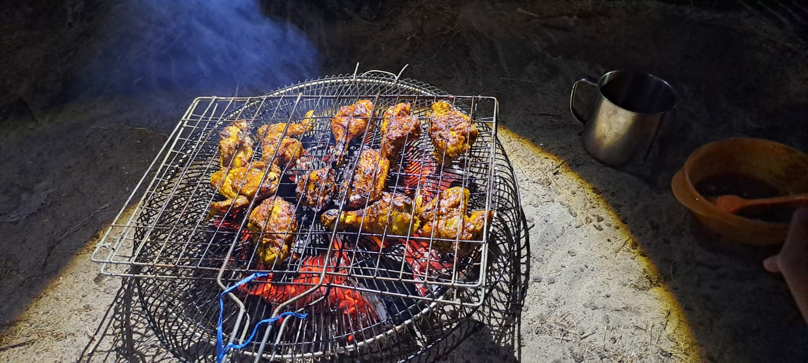
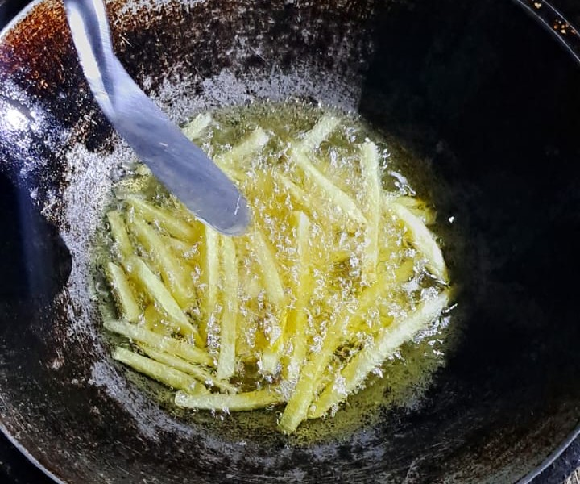
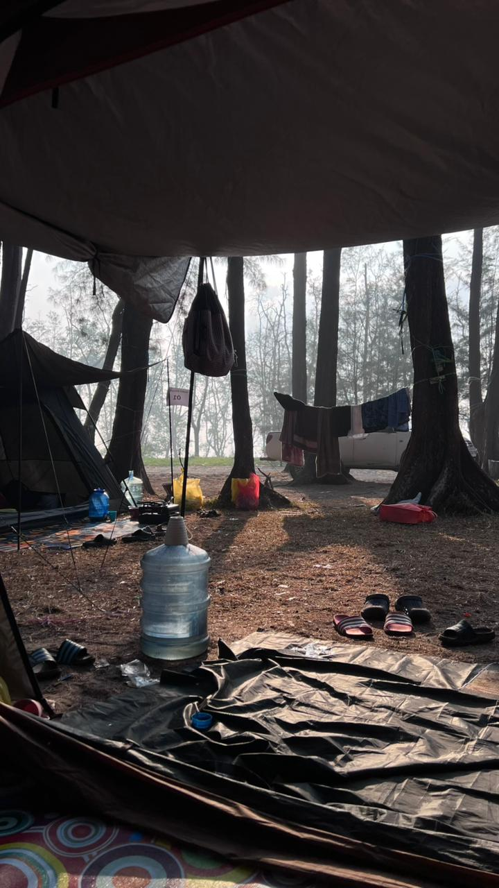
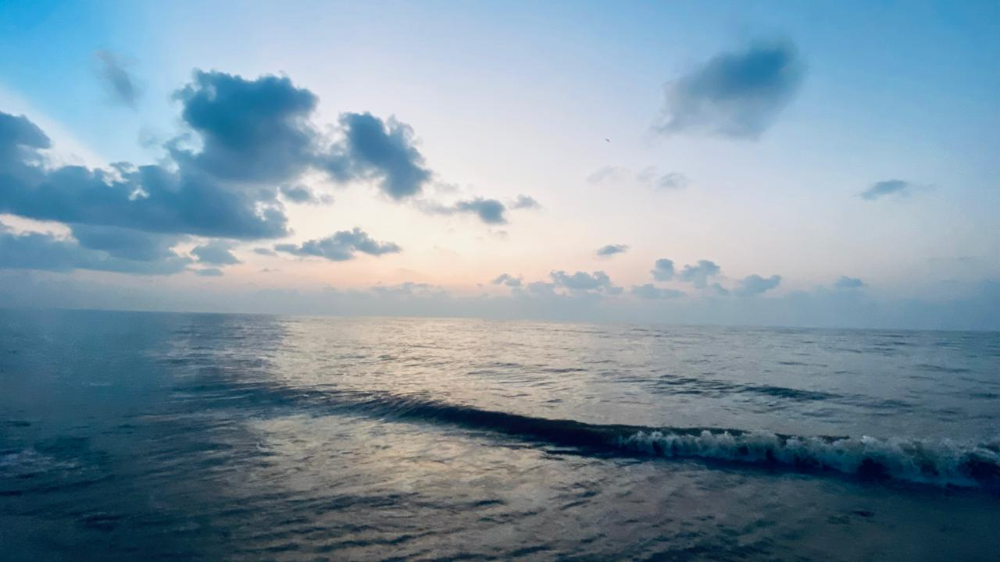
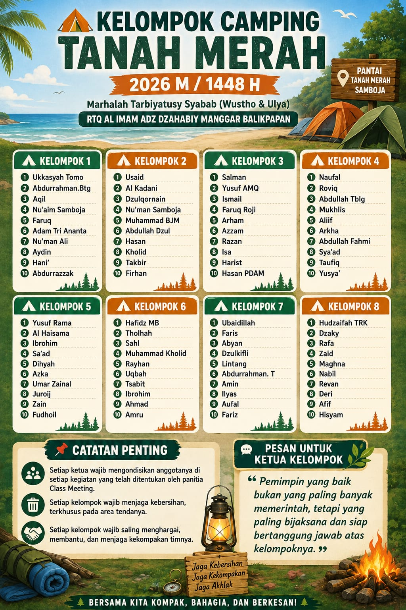

Alhamdulillah, kegiatan Class Meeting Santri Rumah Tahfizhul Qur'an Al Imam Adz Dzahabiy telah terlaksana dengan lancar, aman, dan penuh kegembiraan.
Kegiatan ini diikuti oleh para santri Wustho dan Ulya dengan antusias. Selain menjadi sarana penyegaran setelah proses pembelajaran, Class Meeting juga menjadi kesempatan bagi para santri untuk membangun kebersamaan, mempererat ukhuwah, serta menumbuhkan kekompakan di antara mereka.

Para santri melakukan camping di Pantai Tanah Merah, Samboja. Suasana alam pantai yang teduh dengan pepohonan di sekitar area perkemahan semakin menambah kegembiraan para santri selama mengikuti kegiatan.

Kebersamaan semakin terasa ketika para santri mempersiapkan makanan pada malam hari.


Makan malam bersama menjadi salah satu momen yang paling berkesan bagi para santri. Ayam yang dibakar bersama dan berbagai menu camilan malam dinikmati dengan penuh kebersamaan.
Selain menikmati makanan, para santri juga belajar untuk saling membantu dalam menyiapkan, menyajikan, dan merapikan makanan setelah selesai makan.
Kegiatan tidak hanya diisi dengan permainan, tetapi juga berbagai aktivitas olahraga dan rekreasi. Pada pagi dan sore hari, para santri bermain sepak bola, voli, dan berenang. Berbagai aktivitas tersebut menjadi sarana untuk menjaga kebugaran sekaligus mempererat hubungan persaudaraan antarsantri.

Dalam seluruh rangkaian kegiatan, para santri tetap diarahkan untuk mengedepankan kebersamaan, kekompakan, saling membantu, menjaga kebersihan, dan menjaga akhlak. Melalui kegiatan ini, para santri belajar bahwa kebersamaan bukan hanya dalam bermain, tetapi juga dalam menjalankan tanggung jawab dan menjaga lingkungan sekitar.

Alhamdulillah, seluruh rangkaian kegiatan Class Meeting dapat berjalan dengan lancar dan aman. Semoga kegiatan ini memberikan pengalaman yang berkesan bagi para santri serta menjadi sarana untuk menumbuhkan kemandirian, tanggung jawab, kepemimpinan, dan ukhuwah di antara mereka.
Semoga Allah Ta'ala memberikan keberkahan kepada seluruh kegiatan pendidikan dan pembinaan para santri Rumah Tahfizhul Qur'an Al Imam Adz Dzahabiy, serta menjadikan mereka generasi yang berilmu, berakhlak, kompak, dan bermanfaat.
